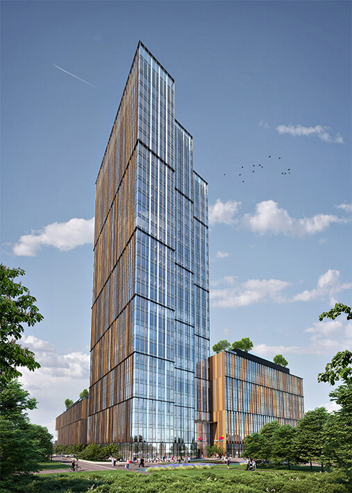
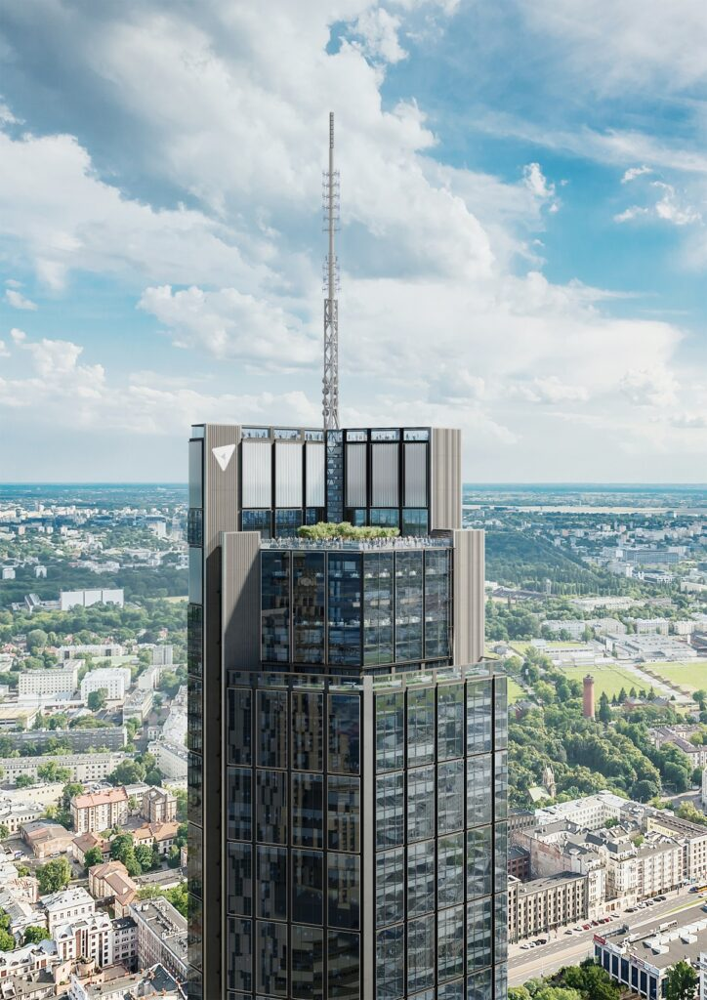
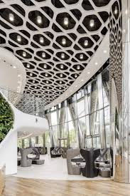

About PKiN
The Palace of Culture and Science (Polish: Pałac Kultury i Nauki abbreviated PKiN) is a notable high-rise building in central Warsaw, Poland. With a total height of 237 metres (778 ft), it is the second tallest building in both Warsaw and Poland (after the Varso Tower), the sixth tallest building in the European Union and one of the tallest on the European continent.
At the time of its completion in 1955, the Palace was the eighth tallest building in the world, retaining the position until 1961; it was also briefly the tallest clock tower in the world, from 2000 until the 2002 installation of a clock mechanism on the NTT Docomo Yoyogi Building in Tokyo, Japan. Motivated by Polish historical architecture and American art deco high-rise buildings, the Palace of Culture and Science was designed by Soviet-Russian architect Lev Rudnev in "Seven Sisters" style. The Palace houses various public and cultural institutions such as theatres, cinemas, libraries, university faculties and authorities of the Polish Academy of Sciences. Surrounding the building are a collection of sculptures representing figures of the fields of culture and science, with the main entrance featuring sculptures of Polish astronomer Nicolaus Copernicus, by Ludwika Nitschowa, and Polish poet Adam Mickiewicz, by Stanisław Horno-Popławski. Since 2007, the PKiN has been enlisted in the Registry of Objects of Cultural Heritage. The building was originally known as the Joseph Stalin's Palace of Culture and Science (Pałac Kultury i Nauki imienia Józefa Stalina), but in the wake of destalinization the dedication to Stalin was revoked. Stalin's name was removed from the colonnade, interior lobby and one of the building's sculptures.
Varso or Varso Place is a neomodern office complex in Warsaw, Poland. It was designed by Foster + Partners and developed by HB Reavis.
Tallest Bulding in EU
The complex features three buildings; the main one, Varso Tower, is the tallest building in Poland, the tallest building in the European Union, and the sixth-tallest building in Europe at 310 m (1,020 ft) in height. It was topped out in February 2021 and completed in September 2022, with the opening of the observation deck planned for summer 2025.
Varso Place is located in Wola, on the corner of Chmielna Street and John Paul II Avenue (pl). Construction takes place on a plot of 1.72 ha (4.3 acres), purchased in 2011 from PKP by the Slovak company HB Reavis for approximately 171 million złoty. The estimated cost of construction was approximately €500 million (2.27 billion zł in 2021). Initially, the project was named Chmielna Business Center, being later changed to Varso, which references the Latin name for Warsaw—Varsovia. The original plan was to build a 130-metre (430 ft) tall skyscraper. The project was later revised and the total height of Varso Tower was increased to 310 m (1,020 ft) including a spire surmounting the building.
Located in the Wola district of Warsaw, the complex consists of a 220-metre main tower with a hyperboloid glass façade, Warsaw Spire A, and two 55-metre auxiliary buildings, Warsaw Spire B and C. The main tower is the third tallest building in Poland (after the Varso Tower and the Palace of Culture and Science).
The design of the skyscraper and adjacent buildings was developed by the Belgian architectural studio Jaspers-Eyers Architects, in cooperation with the Polish-Belgian Projekt Polsko-Belgijska Pracownia Architektury. Surrounding the buildings there is a large open plaza, featuring green areas and water elements. n December 2011, the Warsaw Spire won the Eurobuild Awards 2011 in the category Outstanding Architectural Design of the Year in Poland.
The LIM Center (Polish: Centrum LIM) is a skyscraper located in Warsaw, Poland. It was completed in 1989 and is 140 m (460 ft) tall making it Poland's 16th tallest building.
Samsung Tower
The building housed the Warsaw Marriott Hotel until 2024. It is currently the seat of the Warsaw Presidential Hotel. The building was built by LIM Joint Venture Sp. Ltd., a consortium of three partners: LOT (Polish Airlines), ILBAU GmbH (an Austrian construction company), and the hotel chain Marriott International. In 1998, ILBAU sold its share to SGS GmbH. The designers were Jerzy Skrzypczak, Andrzej Bielobradek, and Krzysztof Stefanski.
The architects were Szmigielski Katten Associates in association with Raglan Squire & Partners of London. The facade is a dark green color, and is adjacent to the Oxford Tower. The building has white edges (illuminated at night with bright, white light) as well as two floors that form dark horizontal stripes, one halfway up the structure and the other at the top, that serve as utility areas.
Luxurious living
Zlota 44 is a residential skyscraper (192 meters high, 52 stories) in central Warsaw, Poland. It was designed by Polish-American architect Daniel Libeskind, in association with Polish architects Architecture. It was developed by US real estate investment manager Amstar and Warsaw developer BBI Development, which bought the topped-out but unfinished building from its initial developer, ORCO.
The building's name comes from its address on Złota ("Golden") Street. Złota 44 is located next to Varso Tower, the tallest building in the European Union (310 m), the Palace of Culture and Science, the second tallest building in Poland (237 m), and the Złote Tarasy shopping center. At 192 meters, Złota 44 is one of the tallest residential buildings in Poland and the European Union. The luxury 52-story skyscraper contains 287 apartments. All of these are equipped with the home management system (HMS), facilitating control of the air conditioning, roller blinds, heating, illumination, and allowing online restaurant orders and other services.